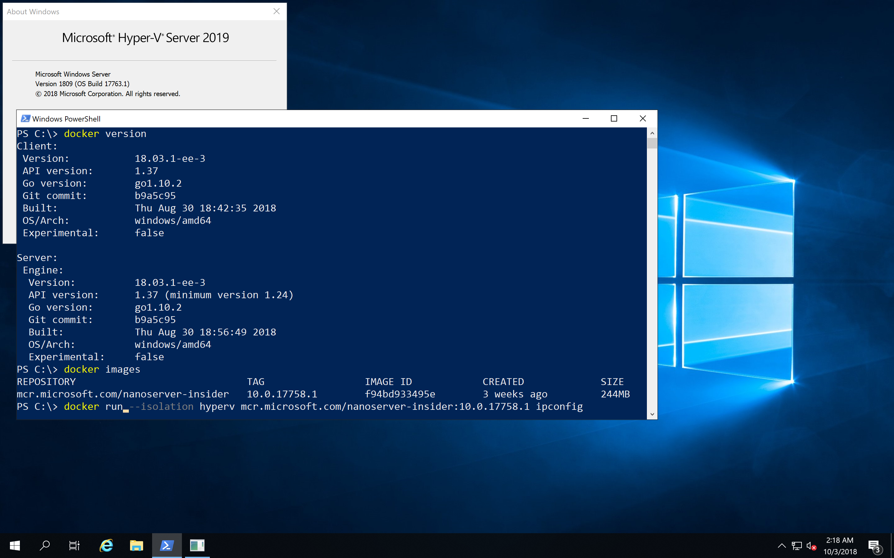
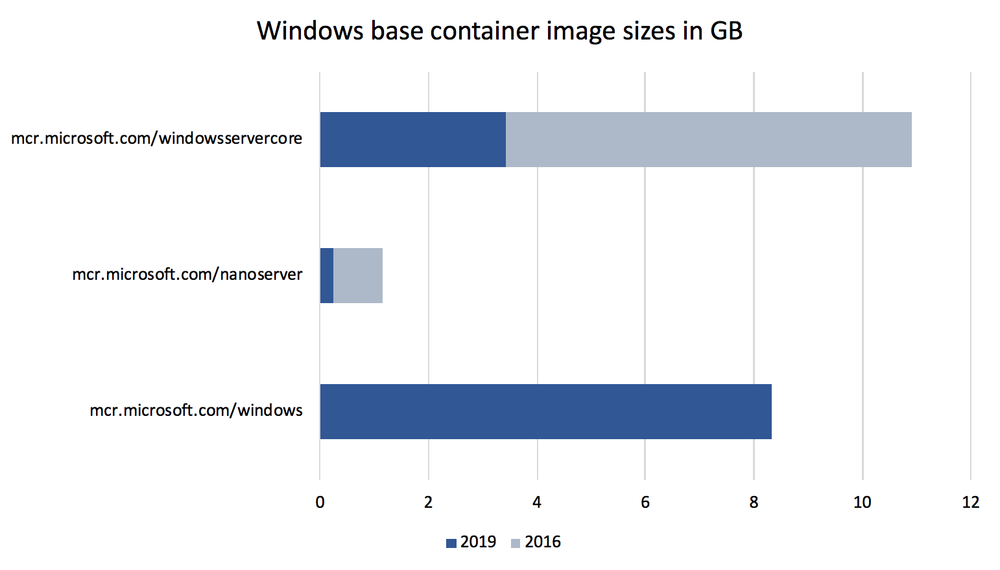
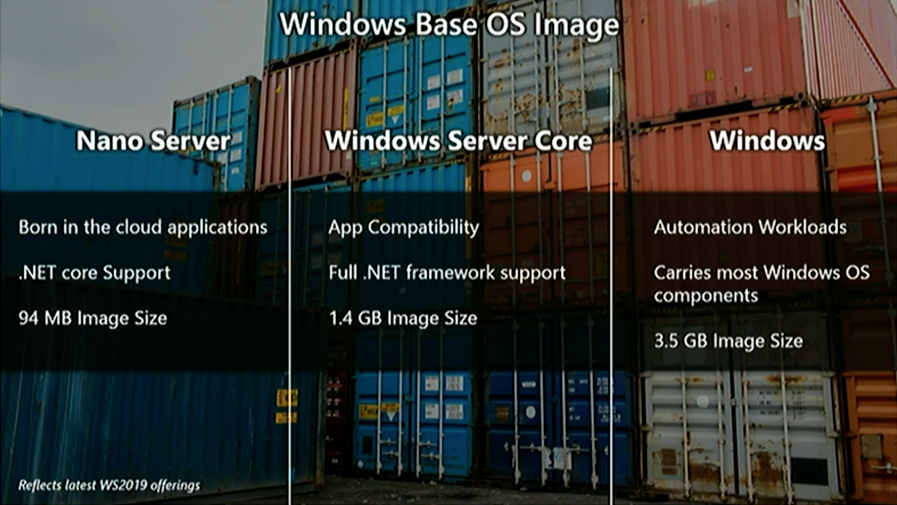
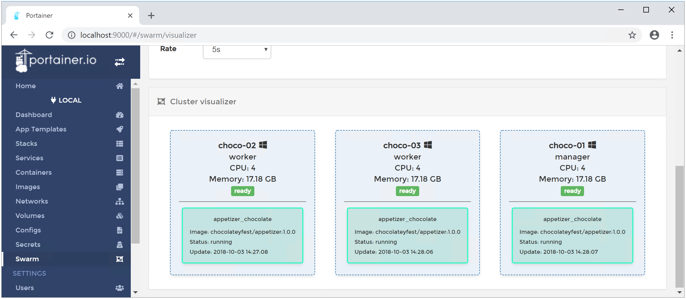
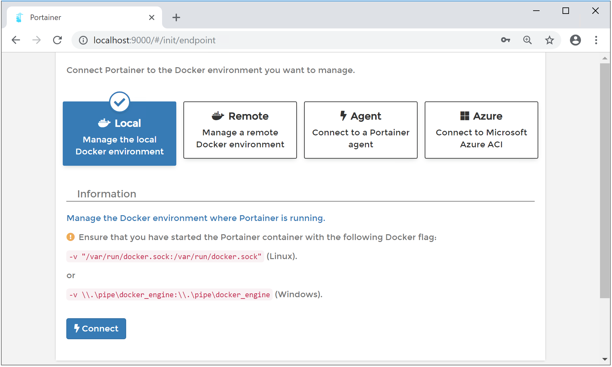

Last week at MS Ignite Microsoft has announced the new Windows Server 2019 which will be general available in October. This is a big new release with a lot of improvements using Docker with Windows Containers. Here is an overview of relevant changes.
Since the last two years after Windows Server 2016 first introduced Windows Container support a lot of things have improved. We have seen some of that changes in the semi-annual releases of 1709 and 1803, and now the long-term supported release has all the latest and greatest updates available.

In-Place update from 2012 R2 / 2016
First of all if you have older Windows Servers running it is possible to install an in-place update to this new release. So it is possible to run Windows Containers after updating your server, adding the Containers feature and installing Docker on your server. I normally create fresh machines with the new operating system, but this update really looks interesting to get access to these new technology.
Smaller base Docker images
The containers team at Microsoft has improved the size of the Windows base images. The container images have been shrunk down to 1/3 to 1/4 of the equivalent 2016 images. The sizes in the diagram below are the sizes after downloading and expanding the Docker images and running the docker images command.

With the very small mcr.microsoft.com/windows/nanoserver:1809 image you will see applications at about 100 MByte (compressed) on Docker Hub.
A new windows base image
In addition to the two known Windows base images for Windows Server Core and Nano Server there is now a third base image: Windows

This image gives you an even broader support for your Windows applications than just the core image. One use-case is for automation workloads like automated UI tests. But notice you still cannot RDP into such Windows containers.
Transition to mcr.microsoft.com
Microsoft has started to move its Docker images from the Docker Hub into a own container registry. What you have to know is that the name for the base images will slightly change. You only have to remember to change the microsoft/ to mcr.microsoft.com/. The following example shows the old and the new image name. Watch out the additional slash / for the Windows Server Core image.
FROM microsoft/windowsservercore:ltsc2016
to
FROM mcr.microsoft.com/windows/servercore:ltsc2019
The tags on Docker Hub are still there and you still will be able to pull the images with the old image name for a while.
The Windows base images has always been hosted on Microsoft CDN as "foreign layers", so really only the tag names changes.
A good question is where can you find the new images. The mcr.microsoft.com registry does not have an UI.
At the time of writing this blog post the new Docker images are not available. The latest information that can be found is on Docker Hub for the Insider images:
https://hub.docker.com/r/microsoft/nanoserver-insider/
https://hub.docker.com/r/microsoft/windowsservercore-insider/
https://hub.docker.com/r/microsoft/windows-insider/
Update: I found two of the three images in the description on Docker Hub here:
https://hub.docker.com/r/microsoft/nanoserver/
https://hub.docker.com/r/microsoft/windowsservercore/
https://hub.docker.com/r/microsoft/windows/ (still 404)
docker pull mcr.microsoft.com/windows/nanoserver:1809
docker pull mcr.microsoft.com/windows/servercore:ltsc2019
I'll update the blog post when I found the image name for the full Windows image.
Ports bind to localhost
When you bind a container port to a host port your containerized application can be accessed with localhost from the host. This is what we are used with Linux containers since the beginning and now you no longer have to find out the container IP address to access your application.
docker run -p 80:80 mcr.microsoft.com/iis
start http://localhost:80
Ingress networking
I have tried one of the latest Insider builds to create a Docker Swarm with multiple Windows machines. And I'm happy to see that you can create a Windows-only Docker Swarm with manager nodes and worker nodes.
I was also able to access the published port of a web server running in Windows containers.
After scaling that service up to have it running multiple times spread over all swarm nodes I also could see the load-balancing is working in such a Windows-only cluster.

Named pipes in Windows containers
Another nice improvement is that you can bind Windows named pipes from the host into Windows containers.
Some tools like Traefik, Portainer UI or another Docker client want to access the Docker API and we know we could bind the Unix socket into Linux containers. With Windows Server 2019 it is possible to do the same with the Docker named pipe.

LCOW?
I could not find any announcement at MS Ignite about Linux Containers on Windows.
So I tried the steps to manually install the LinuxKit kernel and updated to the latest Docker EE 18.03.1-ee-3 version.
In this combination LCOW really works, but I cannot say how stable it is and if it's officially supported. Probably we have to wait a little longer to see a better experience to install this feature.
Get it now
Go and get in touch with the new Windows Server 2019.
- Spin up a Windows Server 2019 from the Azure Marketplace.
- Go to your MSDN subscription and download the ISO.
- Go to the Evaluation Center https://www.microsoft.com/en-us/evalcenter/evaluate-windows-server-2019 and download the VHD or ISO.
- Pick my Vagrant box from Vagrant Cloud suitable for VMware Workstation/Fusion, Hyper-V and VirtualBox.
- Watch the videos from last weeks MS Ignite about Windows Server 2019 and Windows Containers.
- Go to Chocolatey Fest 2018 next week in San Francisco where you can attend a hands-on workshop. Use the code Speaker50 when you register.
TL/DR
When you work with Windows Containers I recommand to switch over to the new Windows Server 2019 release. It is much simpler now to work with Windows containers. With the smaller images you can deploy your application even faster.
You still can run your old containers from 2016 in Hyper-V isolation mode, but I recommend to rebuild them with the new Windows base images to experience faster downloads and start times.